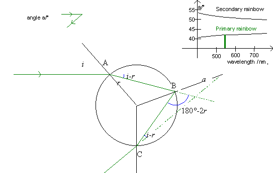
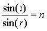
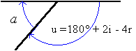
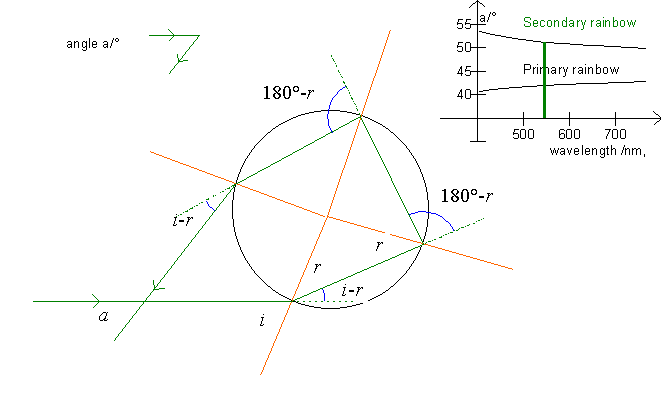
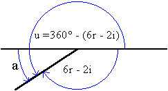

The above illustration shows the refraction and reflection of a ray in a drop that causes the primary rainbow. Using the laws of reflection and refraction we can find the angle between the ray from the sun and the ray that we observe (the rainbow). This angle is called a.
At point A, the ray is refracted, and the law of refraction gives

,
where i is the angle of incidence, r the angle of refraction and n the index of refraction for the drop of water. The ray's deflection is the angle i - r.
At point B, the ray is reflected within the drop (angle of reflection = angle of incidence = r); the ray's deflection is the angle 180° - 2r.
At point C the ray is refracted out of the drop, here the angle of incidence is r and the angle of refraction is i. The ray's deflection is the angle i - r.
In total, the ray's deflection becomes:
u = (i - r) + (180° - 2r) + (i - r) = 180° + 2i - 4r.

From the above figure, it is evident that the angle a equals 180° - u, i.e.
a = 180°- (180° +2i - 4r) = 4r - 2i.
Thus, the angle of the primary rainbow is a = 4r - 2i.
The angle a is shown on the upper right graph as a function of the wavelength l for both the primary and the secondary rainbow. Furthermore, the angle is displayed in the little figure in the upper left.

In the secondary rainbow, the ray is reflected twice within the drop, so the ray is deflected with an angle u, see the blue arcs on the figure.
u = (i - r) + 2(180°-2r) + (i - r) = 360° + 2i - 6r

u = 360° - (6r - 2i).
The deflection of the sunray is thus
u = 360° - (6r -2i).
The angle of the secondary rainbow becomes:
a = 180° - (6r - 2i).
For both rainbows, the angle of incidence i can vary between 0°, as the ray falls on the center of the drop (p=0), and 90°, as the ray brushes the drop (p=1). We can now use the program to examine the variation of the angle of refraction and thus the angle of deflection (see also Alexander's band and Colors of the rainbow).
Exercise 7
Between which values does the angle, a, vary for the primary rainbow?
Between which values does the angle, a, vary for the secondary rainbow?
Select »marks« and »axes« and »normals« and print a graph for both the primary and the secondary rainbow. Add to the print angles of incidence and refraction and find the »blue« angles as a function of i and r.
Hereby show the equations:
a = 4r - 2i for the primary rainbow
and
a = 180° - (6r-2i) for the secondary rainbow.
Exercise 8
Use the program to fill out a form like this:
| color |
wave- length |
index
of refraction |
maximum angle of deflection for the primary rainbow | minimum angle of deflection for the secondary rainbow |
The explanation of the rainbow is that different colors have different indices of refraction and are thus refracted differently. But there are certain angles that no light is refracted to, and this interval of angles is also dependent of the wavelength.
Exercise 9
Use your results from the table in exercise 8 to draw a graph that corresponds to the little graph in the upper right corner of the program's illustration of the drop.
Notice that the track bar in the upper left switches between the primary and the secondary rainbow. Also notice that pressing F6 will draw a pencil of parallel rays falling on the drop. This clearly shows where the scattered rays go. Also notice that the density of the rays is highest near the maximal (minimal) angle.
On this and other displays, the ray with an angle of deflection equal to the rainbow angle is drawn in red. This ray can be turned on and off with F5. The axes of incidence (brown lines) can be turned on and off with F3, and the axes of the coordinate system can be selected with F4.